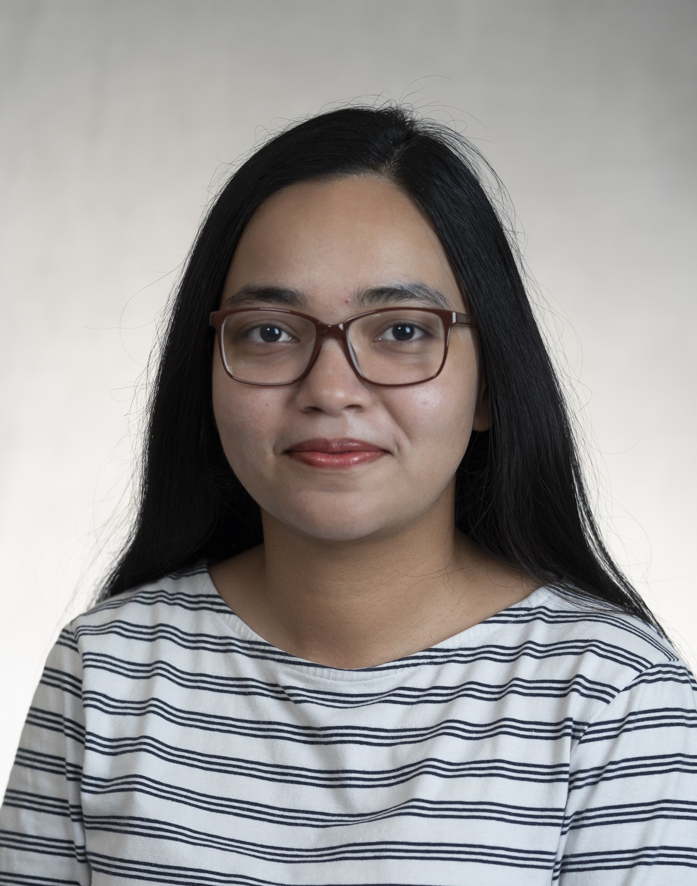
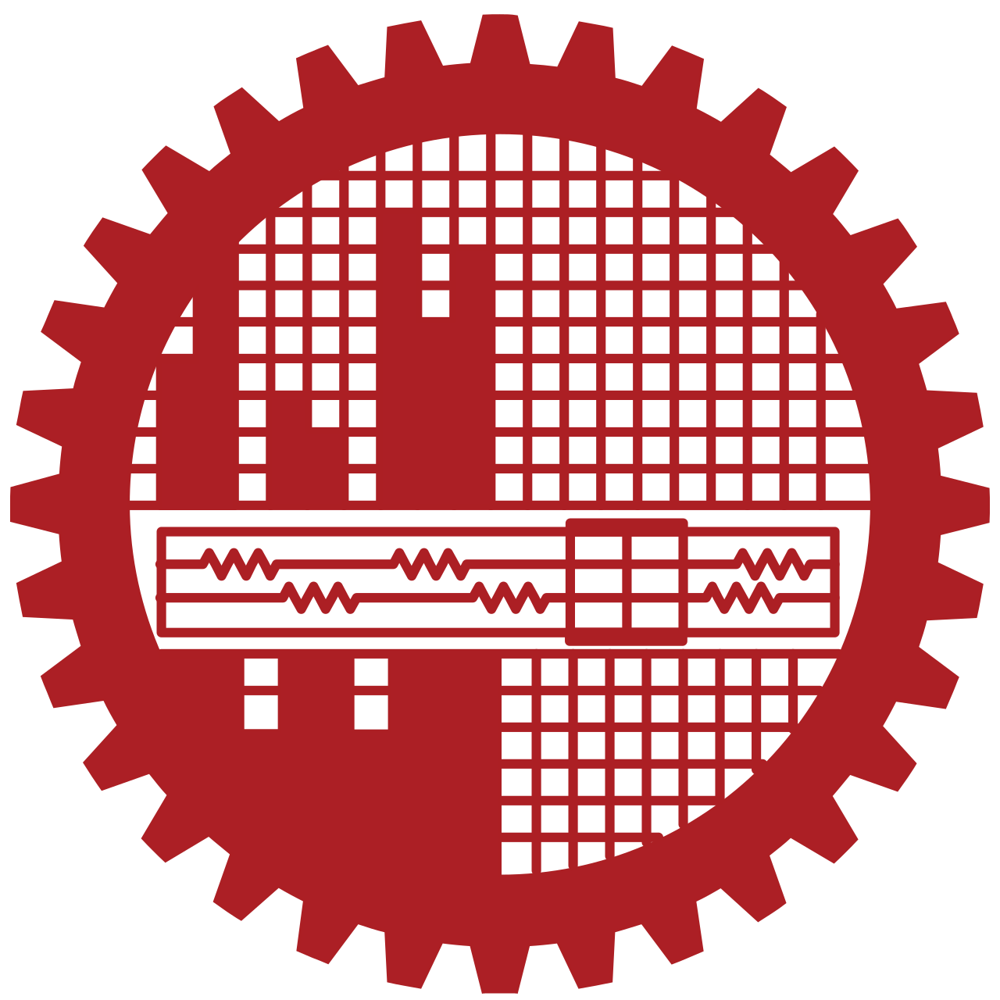

Mohseu Rashid Subah
Weldon School of Biomedical Engineering, Purdue University
Hi, I am Subah! I am a Ph.D. candidate at the Weldon School of Biomedical Engineering at Purdue University, West Lafayette (Boiler Up!). I am a graduate research assistant at the QBIS Lab and an AAUW International Doctoral Degree Fellow (2025–2026). I received my B.Sc. in Electrical and Electronic Engineering from Bangladesh University of Engineering and Technology (BUET), with a major in Communication and Signal Processing.
My research lies at the intersection of Signal Processing, Machine Learning, Deep Learning, and Computer Vision for biomedical image and clinical data analysis. Specifically, I explore label-efficient learning strategies using foundation models for medical image segmentation and classification, and study domain adaptation techniques to improve generalization across datasets. When not engaged in research, I enjoy reading and traveling.

Professional Experience
Present
&
Fall 2023–
Fall 2024
- Develop AI-driven solutions for medical image analysis across multiple imaging modalities, including HR-pQCT, UTE-MRI, DXA, and ultrasound.
- Explore self-supervised, semi-supervised, and few-shot learning frameworks for segmentation and musculoskeletal disease characterization with limited annotation.
- Study domain adaptation using generative models to improve cross-domain performance.
- Complement deep learning with interpretable, classical machine-learning approaches to support clinical relevance and translational impact.
- Collect, preprocess, and utilize large-scale private medical imaging datasets alongside public datasets.
- Collaborate with physicians and radiologists across institutions to support translational research.
- Mentor undergraduate researchers and proactively manage lab activities to ensure smooth project execution and knowledge sharing.
- Designed and graded assignments and exams.
- Held office hours to provide support on theoretical concepts and problem-solving techniques.
- BME 23100: Bioinstrumentation & Circuit Theory
- BME 59500: Bone Biology
May 2023
- Instructed and coordinated freshman and senior-level courses, including theory and laboratory sections, averaging 30–40 students per class.
- Held regular office hours for personalized guidance and open discussions.
- CSE 1325: Digital Logic Design
- CSE 1326: Digital Logic Design Laboratory
- CSE 4325: Microprocessors & Microcontrollers
- CSE 4326: Microprocessors & Microcontrollers Laboratory
Research Projects


Despite being the most prevalent bone disease worldwide, osteoporosis remains largely silent until a fracture occurs. Emerging modalities such as HR-pQCT can capture rich 3D microstructural information, yet existing analysis pipelines focus almost exclusively on mineralized bones, leaving much of the acquired image data underutilized.
We developed the first fully automated multi-region HR-pQCT segmentation framework using SegFormer, simultaneously delineating the cortical and trabecular bone of the tibia and fibula alongside surrounding soft tissues. From each region, 939 radiomic features were extracted and used to train machine learning classifiers on an independent dataset of 20,496 images from 122 HR-pQCT scans.
The segmentation model achieved a mean F1 score of 95.36% across all regions. For osteoporosis classification, myotendinous tissue features yielded the best image-level performance, achieving 80.08% accuracy and an AUROC of 0.85, outperforming bone-based models. At the patient level, replacing standard DXA and HR-pQCT parameters with soft tissue radiomics improved AUROC from 0.792 to 0.875, demonstrating that integrated soft tissue assessment captures clinically meaningful signals beyond bone alone.
Medical image segmentation models trained on data from one institution or scanner often fail to generalize when deployed on data from a different source — a challenge known as domain shift. Compounding this, obtaining pixel-level annotations for medical images is expensive and time-consuming, making fully supervised approaches impractical in many clinical settings.
We address both challenges with a framework that combines GAN-based style transfer for domain adaptation with a Mean Teacher semi-supervised segmentation architecture built on a MedSAM backbone. The style transfer component reduces the visual gap between source and target domains, while the Mean Teacher framework leverages unlabeled target-domain images alongside a small set of labeled data to improve generalization without requiring additional annotation.
With only 20 labeled images from a single source domain, the framework achieves an average Dice score of 79% across test sets from all 6 domains of the prostate MRI benchmark — demonstrating strong generalization under both label scarcity and domain shift conditions.
Magnetic microscale robots hold significant promise for targeted drug delivery and minimally invasive surgical interventions — capable of navigating the body and releasing therapeutics precisely at a site of interest. Reliably tracking these robots inside a living organism using ultrasound is, however, extremely challenging: the robots are tiny, their echogenicity is poor, and the signal is corrupted by biological tissue noise, imaging artifacts, low resolution, and out-of-plane motion.
To address this, we developed two complementary tracking systems. The first is a robust real-time pipeline based on conventional image processing, capable of tracking five different types of microscale robots through the tortuous paths of the rat colon — handling partial and full occlusion as well as varying ultrasound acquisition parameters. The second leverages the YOLOv8 deep learning architecture, trained on a dedicated annotated dataset of 79 ultrasound videos and over 17,000 frames, with promising detection results.
Conventional MRI cannot capture bone well because bone has an extremely short signal decay time. Specialized sequences like ultrashort echo time (UTE) and zero echo time (ZTE) MRI address this, but the way they sample the imaging space (k-space) is inefficient, leaving signal quality and resolution on the table.
We implemented PETALUTE, a novel 3D dual-echo rosette k-space trajectory that samples more efficiently than conventional radial approaches — sweeping through the center of k-space both on the way out and back in. Rat bone specimens were scanned at 7T and reconstructed in MATLAB, with an additional compressed sensing reconstruction applied to further boost image quality.
PETALUTE produced high-quality bone images with a 51.54% improvement in signal-to-noise ratio (SNR) and a 41.67% improvement in spatial resolution compared to the standard UTE acquisitions. Compressed sensing reconstruction improved SNR even further, confirming that the rosette trajectory's dense central k-space sampling is particularly well-suited to this reconstruction approach.
Accurate sleep stage classification from EEG signals is clinically valuable but labor-intensive to annotate. Expert labeling of overnight recordings is slow and expensive, creating a need for methods that can learn effectively from unlabeled EEG data.
We developed a self-supervised contrastive learning framework using a modified ResNet-50 backbone paired with a multi-head attention-based temporal context encoder. The model is first pretrained using a SimCLR framework to learn robust EEG representations without using any labels. The pretrained encoder is then fine-tuned for downstream sleep stage classification using only a small fraction of labeled data.
The framework achieved 80.6% overall accuracy on the Sleep-EDF dataset, outperforming supervised baselines across multiple evaluation metrics. Crucially, the model achieved less than a 5% drop in accuracy when trained with only 30% of labeled data, directly addressing the challenge of scarce annotation in clinical EEG datasets.
During the COVID-19 pandemic, the scale of diagnosis required far exceeded what radiologists could handle manually, creating urgent demand for automated tools. Chest CT imaging offers rich structural information for detecting pulmonary disease, but automated analysis requires first isolating the lung region before meaningful classification can occur.
We proposed a two-stage deep CNN pipeline. In the first stage, a modified U-Net architecture (SKICU-Net) with additional skip connections segmented the lung region from CT slices, followed by agglomerative hierarchical clustering to discard uninformative slices. In the second stage, a modified DenseNet (P-DenseCOVNet) with parallel convolutional paths classified each segmented slice as COVID-19, common pneumonia, or normal, with the parallel paths helping recover positional information lost in standard DenseNet designs.
The segmentation stage achieved an F1 score of 0.97, and the overall diagnostic pipeline reached 87.5% accuracy across three classes, demonstrating the viability of the two-stage approach as an automated diagnostic tool.
Cardiovascular disease is a leading cause of death worldwide, and early detection is critical. Phonocardiogram (PCG) signals are a non-invasive, low-cost indicator of cardiac condition. However, diagnosis currently depends heavily on physician expertise, making it inaccessible in low-resource settings where automated screening tools could have the greatest impact.
We proposed a dual-stream deep learning network that simultaneously processes two complementary representations of the heart sound signal. A convolutional stream operates directly on the raw PCG waveform, while a recurrent stream processes Mel-Frequency Cepstral Coefficient (MFCC) features that capture spectral-temporal patterns. The outputs of both streams are fused through a novel attention mechanism that selectively weights the most informative features before passing them to the classification head.
The network achieved 87.11% accuracy, 82.41% sensitivity, and 91.8% specificity for binary abnormality detection. The attention-based fusion of complementary signal representations proved more effective than using either stream alone, demonstrating that combining raw waveforms with hand-crafted spectral features can yield robust cardiac screening performance.
Sign language is the primary mode of communication for the hearing and speech impaired, yet automated recognition systems have focused overwhelmingly on widely spoken sign languages, leaving Bangla Sign Language (BdSL) largely unaddressed. Building such a system requires handling the challenges of hand segmentation from complex backgrounds and extracting discriminative features from hand gesture images.
We developed a pipeline that converts input RGB images to YCbCr color space and applies Fuzzy C-means clustering to produce binary segmentation masks of the hand region. From each segmented gesture image, 18 hand-crafted geometric and shape features were extracted for 10 BdSL alphabet signs. A multiclass SVM classifier was trained on a custom dataset of 400 images collected and curated specifically for this task.
The system achieved 99.8% accuracy on static hand poses across all 10 signs. Beyond the classification pipeline, a key contribution of this work was the creation and public release of one of the first curated BdSL image datasets, providing a foundation for future research in Bangla sign language recognition.
Publications
-
arXiv preprint, arXiv:2603.09137v2, 2026
-
Computers in Biology and Medicine, Vol. 149, 2022, 105806
-
IEEE Region 10 Conference (TENCON) 2020, Osaka, Japan
-
IEEE International WIE Conference on Electrical and Computer Engineering (WIECON-ECE) 2019, Bangalore, India
-
arXiv preprint, arXiv:2211.09751, 2022
-
American Society for Bone and Mineral Research (ASBMR) Annual Meeting 2025, Seattle, WA, USA
-
American Society for Bone and Mineral Research (ASBMR) Annual Meeting 2024, Toronto, Ontario, Canada
-
Experimental Nuclear Magnetic Resonance Conference 2024, Pacific Grove, CA, USA
Skills
Languages
Frameworks & Libraries
ML / DL Methods
Computer Vision & Imaging
Signals & Analytics
Tools & Softwares
Education


Verbal: 162/170 (90th pct.)
AWA: 5/6 (91st pct.)
R: 9.0 · L: 9.0 · S: 8.5 · W: 7.0
Honors & Awards
Leadership & Volunteering
- Organized the 2nd Signal Processing Research and Innovation Conclave 2021 — virtual seminar on ML/DL in signal processing.
- Organized a technical talk on signal processing as part of the Diversity and Inclusion Talk Series 2021.
- Led a team to build an official website for the chapter.
- Prepared over 150 certificates as a student volunteer at TENSYMP 2020.
- Organized membership drives to recruit new members in 2019 and 2020.
- Earlier served as Membership Development Coordinator (Nov 2018 – Jul 2019).
- Organized workshops on essential technical skills (e.g., embedded system design, PCB design, digital logic, AutoCAD, LaTeX), seminars, and outreach programs for pre-university institutions.
- Part of the organizing team for the Celebration of International Women's Day 2020, focusing on engaging more women in the power and energy sector.
- Maintained the official website for two years as Website Coordinator.
- Earlier served as Assistant Treasurer (Jul 2019 – Apr 2021), Website Coordinator (Nov 2018 – Jul 2019), and Photographer (Jan 2018 – Nov 2018).
- Organized "Decoding DESCO" — a technical talk on opportunities for engineers at DESCO.
- Led Membership Drive 2022, recruiting 51 new members.
- Earlier served as Treasurer (Jul 2019 – Apr 2021) and Publicity Coordinator (Aug 2018 – Jul 2019).
- Part of the organizing team for the 3rd EW:B National Enviro+ Challenge 2018 — a two-day event including an environment olympiad, case study competition, photography contest, and poster presentation.
- Volunteered for the 2nd EW:B National Enviro+ Challenge 2017 and Clean Campus 2017 events.
- Earlier served as Office Secretary (May 2019 – Apr 2021), Assistant Organizing Secretary (Oct 2018 – Apr 2019), and Event Organizer (Apr 2018 – Oct 2018).
- Acted as primary judge for the Intra-BUET Book Review Competition 2021.
- Contributed to collecting over 250 new books for the library.
- Earlier served as Assistant Treasurer (Nov 2018 – Jun 2019).
- Translated 5+ articles into Bangla Wikipedia.
Contact
Get in touch
I'm always open to discussing research, collaborations, or opportunities. Please feel free to reach out — I'll do my best to reply promptly!